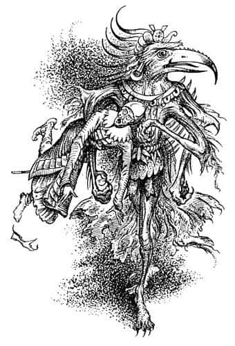
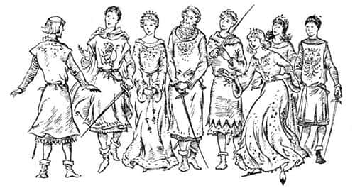

Kapıdan Geçiş
Jill aslında çoktan beyaz kayaya gitmiş olmalıydı, ama savaşı seyretmenin heyecanıyla aldığı emri unutmuştu. Ancak aklı başına gelmişti. Hemen geriye dönüp koşmaya başladı ve diğerlerinden bir saniye kadar önce oraya ulaştı. Öyle bir an gelmişti ki, hepsi sırtını düşmana dönmüştü. Kayaya ulaştıkları an geriye baktılar. Gözlerinin önündeki manzara korkunçtu.
Bir Calormenli, tekme atarak karşı koymaya çalışan bir şeyi taşıyarak ahıra doğru koşuyordu. Adam ateşle onların arasına geldiğinde, onu ve taşıdığı şeyi açıkça görebildiler. Bu Eustace’di.
Tirian ve Tekboynuz onu kurtarmak için koştu, ama Calormenli kapıya çok yakındı. Onlar yolu yarılamadan Calormenli Eustace’i içeriye fırlatıp kapıyı kapatmıştı. Yarım düzine Calormenli de onun ardından koşmuş, ahırın önündeki açık alanda bir hat oluşturmuştu. Oraya gitmek artık imkânsızdı.
Jill o durumda bile yüzünü yayından uzağa, yana doğru çevirmeyi hatırlamıştı. “Gözyaşlarımı durduramasam da ibrişimi ıslatmayacağım” dedi.
“Oklara dikkat!” dedi Zıpır aniden.
Herkes eğilip miğferini gözlerine kadar indirdi. Köpekler onların arkalarına çömeldi. Birkaç okun yakınlarına düşmesine rağmen, çok geçmeden onlara nişan alınmadığı ortaya çıktı. Kıkır ve cüceleri ne kadar iyi okçu olduklarını gösteriyordu tekrar. Bu kez büyük bir soğukkanlılıkla Calormenliler’i vuruyorlardı.
“Devam edin gençler!” diye duyuldu Kıkır’ın sesi. “Hep beraber. Dikkatli olun. Ne Maymun’u ne Aslan’ı ne Kral’ı ne de Calormenliler’i istiyoruz. Cüceler cüceler içindir.”
Cüceler hakkında ne isterseniz söyleyin, ama asla cesur olmadıklarını söylemeyin. Kolaylıkla uzaklaşıp emin bir yere gidebilirlerdi. Ancak kalıp her iki taraftan da öldürebilecekleri kadarını öldürmeyi tercih etmişlerdi; elbette iki taraf da birbirlerini öldürerek onları bu zahmetten kurtardığı zaman seyirci kalmak işlerine geliyordu. Narnia’yı kendilerine istiyorlardı.
Ancak hesaba katmadıkları şey, atların aksine Calormenliler’in zırhlı olmalarıydı. Ayrıca Calormenliler’in bir lideri de vardı. Rishda Tarkaan bağırmaya başladı:
“Otuzunuz beyaz kayadaki o aptalları gözleyin. Geri kalanlar beni takip etsin ki, şu yeraltı çocuklarına bir ders verelim.”
Tirian ve dostları savaşın verdiği yorgunlukla nefes nefeseydi, birkaç dakika dinlenebilecekleri için memnun, Tarkaan’ın adamlarının cücelere karşı saldırısını seyrediyorlardı. Bu çok garip bir görüntüydü. Ateşin alevleri küçülmüştü ve artık daha kırmızıydı. Görüldüğü kadarıyla cüceler ve Calormenliler hariç toplantı yerinde kimse yoktu. Bu ışıkta hepsini görebilmek epey zordu. Cücelerin iyi bir savaş verdiği anlaşılıyordu. Tirian, Kıkır’ın küfürler savurduğunu ve Tarkaan’ın, arada sırada “Yakalayabildiklerinizi canlı yakalayın. Canlı ele geçirin!” diye bağırdığını duyabiliyordu.
Nasıl bir kavga olduğunu bilmiyoruz, ama fazla uzun sürmedi. Gürültü kesildi. Sonra Jill, Tarkaan’ın ahıra doğru yürüdüğünü gördü; on bir tane bağlanmış cüceyi sürükleyen on bir adam onu takip ediyordu. Diğerlerinin öldürülüp öldürülmediği ya da bazılarının kaçıp kaçmadığı asla öğrenilemedi.
“Onları Taş’ın tapınağına atın” dedi Rishda Tarkaan.
On bir cüce birbiri ardından o karanlık kapıdan içeri fırlatılıp tekmelenerek sokulduğunda ve kapı tekrar kapatıldığında Tarkaan ahırın önünde yerlere kadar eğildi ve, “Lord Taş, bunları sana sunuyoruz” dedi.
Tüm Calormenliler kılıçlarının yassı taraflarını kalkanlarına vurarak, “Taş! Taş! Ulu Tanrı Taş! Acımasız Taş!” diye bağırdılar. Artık kimsenin Taşlan’dan bahsettiği yoktu.
Beyaz kayanın yanındaki küçük grup olup biteni seyrediyor ve fısıltıyla konuşuyordu. Damlalar halinde kayadan akan bir su bulmuşlar ve şevkle içmişlerdi - Jill, Zıpır ve Kral elleriyle, dört ayaklılar da taşın dibindeki küçük birikintiden yalayarak içmişlerdi. Öylesine susamışlardı ki, yaşamlarındaki en lezzetli şeyi içiyorlardı sanki. İçerken çok mutluydular, başka şey düşünemiyorlardı.
“Sabah olmadan” dedi Zıpır, “hepimizin birer birer o karanlık kapıdan geçeceğini hissediyorum. Yüz farklı ölümü buna tercih ederdim.”
“Gerçekten korkunç bir kapı” dedi Tirian. “Daha çok bir ağzı andırıyor.”
“Bunu engelleyecek bir şey yapamaz mıyız?” dedi Jill, sarsılmış bir sesle.
“Hayır, güzel dostum” dedi Cevher, nazikçe burnunu ona sürterek. “Bu bizim için Aslan’ın ülkesine açılan kapı olabilir, belki bu akşam onun masasında yemek yeriz.”
Rishda Tarkaan arkasını ahıra döndü ve ağır ağır beyaz kayanın önünde bir yere geldi.
“Kulaklarınızı açın” dedi. “Yabandomuzu, köpekler ve Tekboynuz gelip merhametime sığınırsa yaşamalarına izin verilecek. Yabandomuzu Tisrok’un bahçesindeki bir kafese, köpekler Tisrok’un köpek evlerine girecek ve Tekboynuz, ben boynuzunu kestikten sonra, arabaya koşulacak. Kartal, çocuklar ve Kral da bu gece Taş’a kurban edilecek.”
Tek cevap hırlamalardı.
“Haydi savaşçılar” dedi Tarkaan. “Hayvanları öldürün, iki ayaklıları canlı istiyorum.”
Son Narnia Kralı’nın son kavgası başladı.
Onları umutsuzluğa düşüren, düşmanın sayısından çok mızraklardı. Başlangıçtan beri Maymun’la birlikte olan Calormenliler’in mızrakları yoktu; çünkü barışçı tüccarlar gibi davranarak Narnia’ya birer ikişer gelmişlerdi. Saklamak imkânsız olduğu için de mızrak taşımıyorlardı. Diğerleri daha sonra gelmiş olmalıydı; yani Maymun iyice güçlendikten sonra, serbestçe dolaşabilecekleri zaman buraya varmış olmalıydılar. Tüm fark mızraklardı. Uzun bir mızrakla, bir yabandomuzunu sizi dişleriyle parçalamadan önce ya da bir tekboynuzlu atı sizi boynuzuyla yaralamadan önce onları öldürebilirsiniz; elbette atik davranıp soğukkanlılığınızı kaybetmemek koşuluyla. İleriye uzatılmış mızraklar artık Tirian ve arkadaşlarına iyice yaklaşmıştı. Birkaç saniye sonraysa, artık hepsi yaşamları için savaşıyordu.
Düşündüğünüz kadar kötü durumda değillerdi. Bir mızrağın altına eğilip üstünden atlayarak, ileriye atılıp geriye çekilerek, etrafında dönerek tüm kaslarınızı gücünüzün yettiğince kullanırken ne korkmaya ne de üzülmeye zamanınız olur. Tirian artık diğerleri için hiçbir şey yapamayacağını biliyordu; hep beraber kötü sona doğru gidiyorlardı. Hayal meyal bir yanında yabandomuzunun düştüğünü, diğer yanında Cevher’in gözü dönmüş bir şekilde savaştığını, göz ucuyla iri bir Calormenli’nin Jill’i saçlarından tutmuş yerde sürüklediğini gördü. Ama bunları düşünecek zamanı yoktu. Tek düşündüğü şey yaşamını mümkün olduğu kadar pahalıya satmaktı. En kötüsü, beyaz kayanın ona sağladığı avantajı kullanamamasıydı. Bir düzine düşmanla aynı anda savaşan birisi bulduğu fırsatları değerlendirmelidir; düşmanın boynunun ya da göğsünün korumasız olduğunu gördüğünde saldırmalıdır. Bu sizi, birkaç ataktan sonra, başladığınız noktadan epeyce uzaklaştırabilir. Tirian çok geçmeden sağa doğru, ahırın yakınına yaklaşmakta olduğunu anladı. Aklında oradan uzakta durması için iyi bir nedeni olduğu hakkında belli belirsiz bir düşünce vardı. Ancak nedenini hatırlayamıyordu. Zaten elinden de hiçbir şey gelmezdi artık.
Aniden her şey belirginleşti. Tirian, Tarkaan’la dövüşmekte olduğunu fark etti. Ateş (artık közleşmişti) önündeydi. Aslında ahırın kapısında dövüşüyorlardı, kapı açılmıştı ve iki Calormenli o içeriye girer girmez kapıyı kapatmaya hazır durumda bekliyordu. Artık her şeyi hatırlıyordu, savaş başladığından beri düşmanın onu ahıra doğru sürüklemekte olduğunu anladı. Bir yandan bunları düşünüyor, bir yandan da elinden geldiğince Tarkaan’la savaşıyordu.
Tirian’ın aklına yeni bir fikir geldi. Kılıcını attı, Tarkaan’ın salladığı kılıcın altından geçerek ileriye atıldı, iki eliyle düşmanını kemerinden yakalayıp geriye, ahırın içine sıçradı ve “Gel kendin de Taş’la tanış!” diye bağırdı.
Sağır edici bir ses duyuldu. Tıpkı Maymun’un içeriye atıldığında olduğu gibi yer sallandı ve kör edici bir ışık görüldü.
Dışarıdaki Calormen askerleri, “Taş, Taş!” diye bağırarak kapıyı kapadı. Taş kendi yüzbaşılarını istiyorsa, almalıydı; askerler hiçbir şekilde Taş’la karşılaşmak istemiyorlardı.
Bir-iki saniye için Tirian nerede olduğunu, hatta kim olduğunu unutmuştu. Sonra toparlandı, gözlerini kırpıştırdı ve etrafına bakındı. Ahırın içi sandığı gibi karanlık değildi. Güçlü bir ışık vardı; gözlerini kırpıştırmasının nedeni buydu.
Dönüp Rishda Tarkaan’a baktı, ama Rishda ona bakmıyordu. Rishda korkunç bir çığlık attı; sonra elleriyle yüzünü kapadı ve yüzüstü dümdüz yere kapaklandı. Tirian Tarkaan’ın işaret ettiği yöne baktı ve her şeyi anladı.
Korkunç bir şey onlara doğru yaklaşmaktaydı. İnsandan büyük olmasına rağmen kulede gördükleri şekilden çok daha küçüktü ama kesinlikle aynı şeydi. Başı bir akbaba başıydı ve dört kolu vardı. Gagası açıktı, gözleri alev alev yanıyordu. Gaklamaya benzer bir ses duyuldu.
“Beni Narnia’ya sen çağırdın Rishda Tarkaan. İşte geldim. Ne söylemek istiyorsun?”
Tarkaan ne başını kaldırdı ne de bir söz söyledi. Kötü bir hıçkırığa yakalanmış bir adam gibi titriyordu. Savaşta yeteri kadar cesurdu ama Taş’ın gerçekten var olduğunu anlamaya başladığında, cesaretinin yarısını kaybetmişti. Ani bir hareketle - bir tavuğun solucan yemek üzere eğilmesi gibi - Taş, sefil Rishda’nın üzerine atıldı ve onu sağ kolunun altına sıkıştırdı. Sonra Tirian’a bakabilmek için başını yana çevirdi; bir kuş kafasına sahip olduğu için insana dosdoğru bakamıyordu.
O anda, Taş’ın arkasından güçlü ve yaz denizleri kadar sakin bir ses, “Git artık canavar, Aslan adına, Aslan’ın görkemli babası denizlerin ötesindeki imparator adına hakkın olan avını kendi evine götür” dedi.
İğrenç yaratık kolunun altındaki Tarkaan’la birlikte kayboldu. Tirian kimin konuştuğunu görmek için döndü. O anda gördükleri, kalbinin hiçbir savaşta çarpmadığı kadar hızla çarpmasına neden oldu.

Önünde başlarında taçları ve parıltılı elbiseleriyle yedi kral ve kraliçe duruyordu, krallar özenle işlenmiş zırhlarını giymiş, kılıçlarını ellerine almıştı. Tirian nezaketle eğilip selam verdi, tam konuşmaya başlamak üzereydi ki, kraliçelerden en genci gülümsedi. Dikkatle onun yüzüne baktı ve şaşkınlıkla yutkundu, çünkü onu tanıyordu. Bu Jill’di; onu son kez gördüğünde yüzü tozlarla ve gözyaşlarıyla kaplı, bir omzundan düşmekte olan eski talim elbisesi giymiş olan Jill değildi bu. Artık sakindi, banyodan yeni çıkmış biri gibi zinde görünüyordu. Tirian ilk başta onun yaşlı göründüğünü, ama daha sonra öyle olmadığını düşündü, bu konuda bir karara varamadı. Sonra kralların en gencinin Eustace olduğunu fark etti, o da Jill gibi değişmişti.

Tirian, üzerindeki kan, ter ve tozlarla bu insanların yanında bulunduğu için kendini garip hissetmişti. Çok geçmeden durumun hiç de öyle olmadığını anladı. Canlı, sakin, temizdi; Cair Paravel’deki büyük bir ziyafette giyeceği türden elbiseler içindeydi. (Narnia’daki şık kıyafetler asla rahatsızlık veren cinsten değildi. Hem güzel görünen hem de rahat olan kıyafetler yapmayı biliyorlardı; ülkenin bir ucundan öteki ucuna, lastik, pazen ve kola gibi şeyler bulunmazdı.)
“Efendim” dedi Jill öne çıkıp mükemmel bir reverans yaparak, “sizi tüm Narnia krallarının kralı Kral Peter’le tanıştırayım.”
Tirian’ın hangisinin Yüce Kral olduğunu sormaya ihtiyacı yoktu, çünkü rüyasında gördüğü (şimdi daha da soylu görünen) yüzü hatırlıyordu. İlerledi, dizi üzerine çöktü ve Peter’in elini öptü.
“Yüce Kral” dedi, “tanıştığımıza çok sevindim.”
Yüce Kral onu kaldırıp bir kralın yapması gerektiği gibi iki yanağından öptü. Sonra onu kraliçelerin en yaşlısına götürdü - ama o bile yaşlı değildi, ne bir tel beyaz saçı ne de kırışıklıkları vardı - ve, “Efendim, bu, Aslan’ın ağaçları büyütüp hayvanları konuşturduğu ilk gün Narnia’ya gelen Leydi Polly” dedi. Ardından altın sakalları göğsünün üzerinde dalgalanan ve yüzü bilgelikle dolu bir adamın yanına gittiler. “Bu da” dedi, “o gün onunla beraber olan Lord Digory. Bu benim erkek kardeşim Kral Edmund ve bu da kız kardeşim Kraliçe Lucy.”
“Efendim” dedi Tirian onların hepsini selamladıktan sonra. “Günlükleri doğru okuduysam bir kişi daha olması gerekiyor. Ekselanslarının iki kız kardeşi yok muydu? Kraliçe Susan nerede?”
“Kız kardeşim Susan” diye cevapladı Peter kısaca ve ağırbaşlılıkla, “artık Narnia dostlarından biri değil.”
“Evet” dedi Eustace, “ne zaman onunla Narnia hakkında konuşmayı ya da bir şeyler yapmayı deneseniz, ‘Ne harika hatıralarınız var! Çocukken oynadığımız o komik oyunları hâlâ unutmamış olmanız çok garip’ diyor.”
“Ah, Susan!” dedi Jill. “Bugünlerde ipek çoraplar, dudak boyası ve davetlerden başka bir şey düşünmüyor. Yetişkinlik merakı görülmeye değer bir şey.”
“Evet, tüm merakı büyümek” dedi Leydi Polly. “Keşke büyümüş olsaydı. Tüm okul yıllarını şimdiki yaşında olmayı isteyerek harcadı, yaşamının geri kalan kısmını da tam tersini yaparak harcayacak. Tüm amacı, insan yaşamının en gülünç zamanına mümkün olduğu kadar çabuk erişmek ve becerebildiği kadar uzun süre orada kalmak.”
“Pekâlâ, artık bunun hakkında konuşmayalım” dedi Peter. “Bakın! Ne güzel meyve ağaçları var. Haydi tadına bakalım.”
Tirian ilk kez etrafına baktı ve bu maceranın ne kadar garip olduğunu anladı.